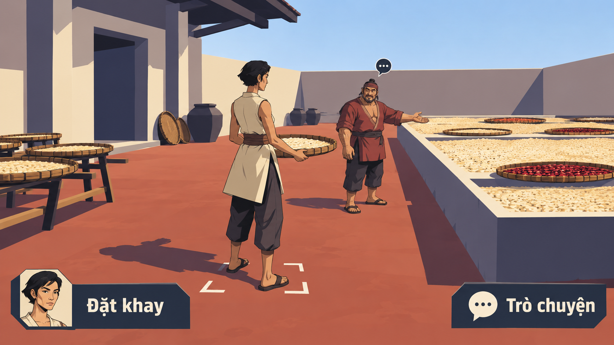

Mười lăm hướng thử từ camera, lớp không gian, thân người, nét mặt tới vật dụng và UI. Có nhánh học từ thư viện, có cách phối hợp khác; không gọi mọi chất liệu quay lại là chưa từng có.
Ba hướng14/1–3 vẫn là ưu tiên nghiên cứu theo phản hồi trước. Các bản01–17 và mọi biến thể tiếp tục được giữ để xem lại hoặc kết hợp; vòng mới chưa chọn mỹ thuật cuối.
Ảnh xem trước · Thư viện tham khảo · Pending user approval
SÂN NGHỀ / GÓC CHÉO MỞ
Sân chéo mở

Thử sân sinh hoạt nhìn chéo với ít mái che, một khoảng trống lớn cho người, tay và công việc cùng đọc được.
Ảnh đề xuất diện mạo game; cảnh và UI trong artwork là raster minh họa. Các nút trên trang chỉ phục vụ xem ảnh.
Chưa tải được ảnh. Kiểm tra thư mục assets của thử nghiệm18.
Đang xem Sân chéo mở.
Phím1–9 chọn mẫu01–09; phím0 chọn mẫu10. Mũi tên trái/phải chuyển qua đủ15mẫu, Home về mẫu01, End tới mẫu15; hoặc bấm tên bất kỳ. Mở toàn khung/PNG gốc để xem kỹ. Cỡ chữ trang xem chỉ đổi chữ HTML, không làm chữ trong ảnh reflow.
CAMERA / THÂN NGƯỜI / NÉT MẶT / VẬT / UI
Mở rộng cách nhìn, giữ con người ở giữa.
Các tác nhân đối chiếu camera, dáng người và lịch sử thử nghiệm, gộp những đề xuất trùng trước khi chọn phạm vi ảnh. Cần xem quy tắc tạo hình có thật trong output, không chỉ tên gọi hay palette.
01–06 · Câu hỏi về không gian07–12 · Câu hỏi về thân người và UI13–15 · Mở thêm giới hạn tạo hình
Mô tả bên dưới là ý định và câu hỏi thử. Mỗi hướng vẫn cần thống nhất cảnh, cast và UI trong cùng frame, không ghép hai phương án thành một combo đã chứng minh. Một ảnh chưa xác nhận toàn bộ roster, trạng thái UI, chuyển động hoặc toàn game.
01 · SÂN NGHỀ / GÓC CHÉO MỞ
Sân chéo mở
Thử sân sinh hoạt nhìn chéo với ít mái che, một khoảng trống lớn cho người, tay và công việc cùng đọc được.
Không gian đề xuất từ worker space; học góc chéo và giảm chi tiết của thư viện trước.
Câu hỏi thử: Khoảng sân và vật đang thao tác có dẫn mắt, hay vẫn thành overview nhiều mái và người nhỏ?
Quan sát ảnh này: Sân mở và người ở cự ly gần, mặt/marker/UI rõ. Người, đồ phơi và sàn còn nhiều nét/texture; camera chưa là orthographic giản lược hoàn toàn.
02 · BA LỚP NGANG / CHE KHUẤT CÔNG CỘNG
Ba dải đường
Thử ba dải hoạt động ngoài trời nhìn ngang, để sự che khuất giữa đường gần, sân giữa và lớp xa tổ chức cuộc gặp.
Đối chiếu dải sinh hoạt13 và mặt cắt16; lần này thử chiều sâu ngoài trời.
Câu hỏi thử: Các dải có tạo chiều sâu và vị trí tiếp cận, hay giống ba bản đồ độc lập hoặc bảng quản lý NPC?
Quan sát ảnh này: Hai tầng lớn và người nền đã tách, cử chỉ chỉ đường dễ đọc. Chưa đủ ba dải liên kết rõ; dải trên như thanh treo, không thấy portrait player riêng.
03 · GẦN VAI / TAY VÀ VẬT HỮU DỤNG
Qua vai người thợ
Thử góc nhìn gần qua vai, để bàn tay, công cụ và người đối diện làm điểm nhập vai thay một toàn cảnh làng.
Học cự ly gần13 và góc nghề14; không mặc định camera hoặc avatar production.
Câu hỏi thử: Tư thế làm việc và người đang nói có rõ khi vai gần che một phần cảnh?
Quan sát ảnh này: Vai, tay, mái chèo và mặt người hướng dẫn thành trọng tâm. Player bị cắt ở mép khung, chưa có portrait riêng; vật liệu còn nhiều sắc độ hơn cel tối giản.
04 · LỐI CHÉO / NHỊP KHỐI VÀ NGƯỜI
Đường chéo dài
Thử một lối hoặc cầu nhìn axon chạy chéo qua khung, với những thân người đủ lớn và khoảng nghỉ giữa các khối.
Phát triển phép nhìn đường–bến của thư viện, không đặt luật di chuyển mới.
Câu hỏi thử: Đường chéo có kết nối một cuộc gặp đọc được, hay chỉ kéo mắt khỏi nhân vật?
Quan sát ảnh này: Lối cầu xiên xuyên hai mép, địa hình thành khối lớn, khác bến làng. Người còn nhỏ và portrait tóc xám chưa rõ tuổi; chưa xác nhận axon chính xác.
05 · THÂN CÂY / KHUNG SINH HOẠT
Rừng là thân cột
Thử đưa sinh hoạt vào giữa rễ và thân cây lớn, dùng khối gần để dựng chiều sâu quanh việc hái, buộc hoặc trao một bó vật.
Mở bối cảnh ngoài bến sông; cây là ngữ pháp không gian, không chỉ phông nền.
Câu hỏi thử: Con người và việc hữu dụng có còn là trọng tâm giữa những khối rừng lớn?
Quan sát ảnh này: Thân/rễ cây lớn tạo che khuất quanh công việc buộc bó, người và mặt đọc được. Lá/nền và phục trang vẫn dày chi tiết, chưa chỉ vài khối.
06 · MẶT BẰNG / PROFILE CÓ QUY ƯỚC
Sân phẳng, người nổi
Thử mặt bằng phẳng đi cùng thân người và đồ vật nhìn mặt đứng theo một quy ước lai có chủ ý.
Đối chiếu những lệch phép chiếu ở14–17; lần này đặt câu hỏi về quy ước lai rõ ràng.
Câu hỏi thử: Người, props và bóng có cùng quy ước, hay chỉ là một sprite chính diện dán lên mặt bằng?
Quan sát ảnh này: Body nghiêng và portrait có họ nét thống nhất, cuộc gặp rõ. Cảnh vẫn phối cảnh nhà/bến thường, chưa sân mặt bằng90° và body-profile theo quy ước riêng như brief.
07 · ÍT TÔNG / MẶT NGƯỜI TRƯỞNG THÀNH
Nét mặt ba sắc
Thử hình người gợi3D với ít mảng sáng tối nhưng giữ mắt, mày, mũi và dấu tuổi đủ rõ ở cự ly chơi.
Có tiền lệ anime11; học thiếu nét mặt và tuổi của một số output17.
Câu hỏi thử: Vài nét mặt có truyền tuổi và biểu cảm mà không quay lại da, vải và nét vụn tả thực?
Quan sát ảnh này: Nét mặt, vai/tay và tuổi hai người rõ, UI cùng tông xanh. Sắc độ/đám đông nhiều hơn ba giá trị mỗi khối; portrait lặp ở cả hai nút.
08 · KHỐI BO LIỀN / DÁNG NGƯỜI LỚN
Khối liền mềm
Thử thân thể và vật dụng bằng vài khối bo liền, giữ đầu theo tỷ lệ người lớn, bàn tay và tư thế lao động dễ đọc.
Nhánh từng giữ trong brainstorm17; khối mềm cũng đã có tiền lệ, không tuyên bố chất liệu lần đầu.
Câu hỏi thử: Hình bo có tạo cá tính thân thể, hay thành chibi, tượng khớp hoặc texture đất nặn?
Quan sát ảnh này: Thân dài–thấp rộng, cột/bình/UI cùng khối bo liên tục. Vẫn có texture, nếp/khối áo và ánh sáng vật liệu; chưa bỏ hết cảm giác đất nặn.
09 · SILHOUETTE ĐẶC / KHOẢNG RỖNG
Mực đặc
Thử dùng mảng mực đặc và khoảng trống ở tay, lưng, vật để đọc cử chỉ; nét nội bộ dành cho mặt và việc chính.
Gộp hai đề xuất cast/audit trùng; đối chiếu bóng rối10 và các hướng nét/mảng cũ.
Câu hỏi thử: Hình đặc–rỗng có đổi cách đọc người và cảnh, hay chỉ là bản cũ chuyển đen trắng?
Quan sát ảnh này: Đặc–rỗng và dấu đỏ tạo thứ bậc, mặt người và hành động rõ. Background/nét lá vẫn dày, có trung gian sắc độ; chưa thuần hai tông ít chi tiết.
10 · DẢI RỘNG / CƠ THỂ VÀ CHE KHUẤT
Người bằng dải
Thử để dải rộng cấu tạo cả thân, tay và chân, trong khi mặt đặc có nét tuổi và UI nối cùng nhịp dải.
Đối chiếu dệt16 chưa xuyên toàn thân; dải là quy tắc tạo hình, không phép thuật.
Câu hỏi thử: Dải có thay silhouette và thứ tự che khuất, hay chỉ quấn thêm vải lên cơ thể thường?
Quan sát ảnh này: V2 đã có torso/tay/chân bằng dải rộng có khoảng rỗng, UI và nền cùng dải. Tính trừu tượng tăng, bản sắc nơi chốn/tuổi cần đào sâu; chưa là topology hoặc chuyển động thật.
Thử vài lớp cao độ và cạnh bậc cùng cỡ xuyên cơ thể, công trình, vật cầm và vùng UI.
Đối chiếu khối/relief16–17; đây là đề xuất thể tích theo lớp, không sơ đồ quét.
Câu hỏi thử: Lớp trên có che lớp dưới và dựng thể tích, hay các đường chỉ trang trí hoặc gợi x-ray?
Quan sát ảnh này: V2 thấy lớp bậc trên đầu/thân/vật/cột/thuyền/UI, khác v1 gần cảnh thường. Cỡ lớp chưa đều, dáng như tượng ghép; UI lặp portrait thay icon Nhật ký.
Thử pixel2D bằng cụm vuông lớn, người và vật có silhouette rõ, giảm chi tiết nhỏ nhưng vẫn giữ dấu mặt và tuổi.
Pixel07/11/17 có tiền lệ; khác biệt phải kiểm ở cụm hình, cự ly và độ đọc.
Câu hỏi thử: Tuổi, tư thế và vật hữu dụng có rõ hơn một mái tóc xám hoặc một lớp pixel filter?
Quan sát ảnh này: Cụm vuông lớn hơn và portrait tóc xám có nét tuổi rõ; body/props/UI cùng diện mạo pixel. Vẫn nhiều chi tiết/sắc độ, không chứng minh palette12màu hoặc grid asset chuẩn.
13 · ĐẶC VÀ RỖNG / ÍT DẤU MẶT
Một-bit có tuổi
Thử một ngôn ngữ một-bit với silhouette, khoảng rỗng và một vài dấu mặt có chủ đích để giữ con người nhiều tuổi.
Đề xuất audit, phân biệt cụm màu pixel với đặc–rỗng và stipple được tiết chế.
Câu hỏi thử: Giới hạn sắc độ có tạo hình rõ hay làm tất cả người thành cùng một bóng không tuổi?
Quan sát ảnh này: Đen–trắng, cụm chấm và lưng/mặt gầy giúp đọc tuổi; khung/nút cùng nhịp raster. Là diện mạo một-bit trên PNG RGB, chưa xác nhận file1-bit hay engine.
14 · MỘT MẶT SÀN / NGƯỜI NHÌN NGANG
Sân khấu một nền
Thử một nền sinh hoạt nhìn ngang ở cự ly gần, để nhiều dáng người và hành động cùng chung mặt tựa dễ hiểu.
Khác nhà mặt cắt nhiều tầng16; không mặc định thành platformer hoặc sân khấu thật.
Câu hỏi thử: Một mặt nền có làm việc và quan hệ gần dễ đọc mà vẫn gợi thế giới tiếp tục ngoài khung?
Quan sát ảnh này: Một sàn chính nhìn ngang, cuộc gặp/người/vải/loom rõ, khác bản dải tầng. Còn phối cảnh/đồ phụ và nền nhiều chi tiết hơn staging cực gọn.
15 · BẬC CẠNH / THỂ TÍCH THÔ
Khối răng cưa
Thử khối gợi3D thô với bước cạnh và mặt phẳng có chủ ý, dùng giới hạn render để thống nhất người, đồ và UI.
Có tiền lệ retro12; đây là câu hỏi hình và thể tích, không chỉ lớp dither phủ ảnh.
Câu hỏi thử: Bước cạnh có hiện ở silhouette và bàn tay, hay chỉ là texture hoặc bộ lọc trên cảnh tả thực?
Quan sát ảnh này: Mặt khối/nhân vật góc cạnh và lối lên đọc được. Cạnh răng cưa/dither chưa rõ, còn gần low-poly minh họa có texture; không renderer retro đã kiểm.
Thư viện tham khảo — giữ mọi phiên bản.
Thêm vòng mới không tự loại hoặc thay thế ý tưởng cũ. Chủ dự án có thể xem lại, chọn hoặc kết hợp khi chốt rõ.